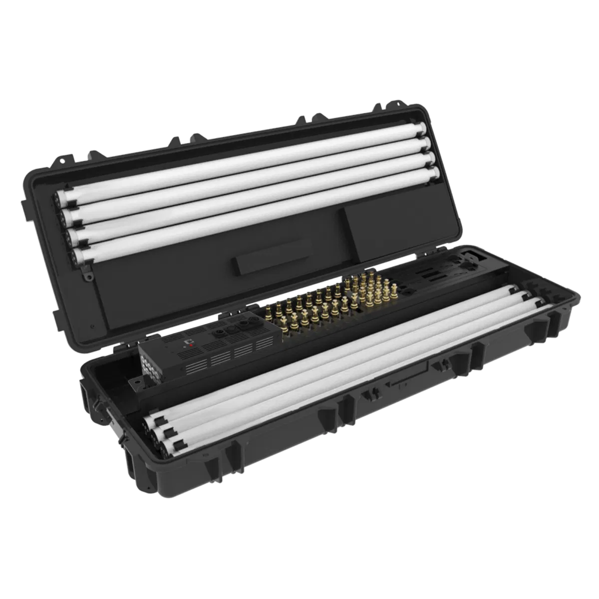

Astera tubes are the most versatile light in our kit. They run on internal batteries, talk to each other wirelessly, and can be stood up, laid down, rigged, or tucked away just about anywhere. No power runs, no DMX cable, no mess. If you have seen a glowing tube standing in the corner of a wedding, a ball, or a music video, chances are it was an Astera.

Each tube has its own battery and wireless control built in. Place them anywhere without running a single cable. Set them, walk away, and they hold their look all night.
The whole kit is controlled from an iPad. Pick a colour, dial in an effect, sync the tubes together, and you are done. No lighting desk, no patching. Whether you are a lighting pro or setting up your own event, it makes the whole thing painless.
Weddings and aisles, school balls, corporate dinners, photo and video shoots, festival decor, and any venue where running power is a hassle. They look as good lying flat across a stage as they do standing tall behind a DJ booth.

We run lighting for everything from intimate weddings to festival stages, including Twominds Festival, Ensoc Ball, and shows with Offline Collective. Astera tubes are a favourite because they are quick to deploy and look fantastic on camera.
Tubes pair well with the rest of our kit. Browse our lighting hire, see our full services, or get in touch.
Tell us about your event and we'll put a kit together.
Get in touch or call 021 178 0355.
A full charge runs a full event and then some. We send them out fully charged and can advise on run times for longer days.
Yes. The iPad kit makes it straightforward and we'll walk you through it on drop-off. Or we can set up and operate them for you.
Yes, they handle outdoor events well. For wet weather we'll talk through placement and protection.
All Ears Events Limited
20 Southwark Street, Christchurch
021 178 0355 · hello@allears.nz
Mon-Fri 9am-4pm